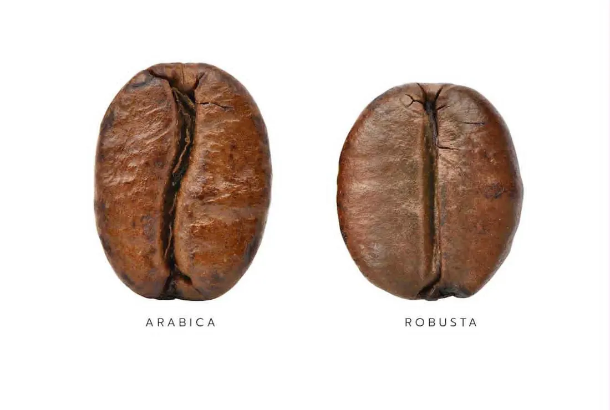

Brew guides · tools · bean quiz
Brew it
like Benny.
Fresh beans deserve a good recipe. Find the coffee that fits how you drink it, work out the exact dose, then let the timer walk you through the pour.
01 · 30 seconds
Find your bean.
Five taps. Benny's lineup, matched to how you brew and what you like in the cup, with the roast and grind to order.
02 · Brew calculator
Dial it in.
Pick a brewer and how much you're making. Get the dose, water, grind, temperature and time. Then start the timer with those numbers.
03 · Brew timer
Pour with
a coach.
04 · Brew guides
Every brewer,
one card each.
Gear, ratio, grind and the short version of the steps. Plus which of Benny's coffees he rates for it.
05 · Freshness
Why roast
date matters.
Coffee is a fresh food. Right after roasting it releases CO₂, then it peaks, then it slowly goes flat. Benny roasts after you order so you get the whole good part.
General guidance. It varies by bean, roast level and brew method: espresso often tastes best after a week of rest, darker roasts move faster than lighter ones, and whole bean holds far longer than ground.
Airtight, dark, cool
Keep beans sealed in the bag (squeeze the air out) or an opaque canister, away from the stove and sunny windows.
Skip the fridge
Moisture and fridge smells get in every time you open it. For long storage, freeze sealed portions and don't refreeze.
Grind right before
Ground coffee loses aroma within minutes. Whole bean plus a burr grinder is the biggest upgrade most kitchens can make.
Buy for 2–4 weeks
Order what you'll drink by the end of the peak. A subscription does the timing for you.

Two species
Arabica vs
Robusta.
Most specialty coffee is arabica. Robusta is the tougher, lower-growing cousin with more caffeine, more body and that thick crema. A well-grown one is no compromise.
| Trait | Arabica | Robusta |
|---|---|---|
| Caffeine | About 1.2–1.5% | About 2.2–2.7%, nearly double |
| In the cup | Sweeter, brighter, more acidity | Bolder, earthy, cocoa and malt |
| Body + crema | Lighter body | Heavy body, big lasting crema |
| Bean | Oval, curved crease | Rounder, straight crease |
General figures; every lot differs.
Natural-process robusta from the shade-grown estates of Coorg and Karnataka. High caffeine, cocoa and malt, excellent crema.